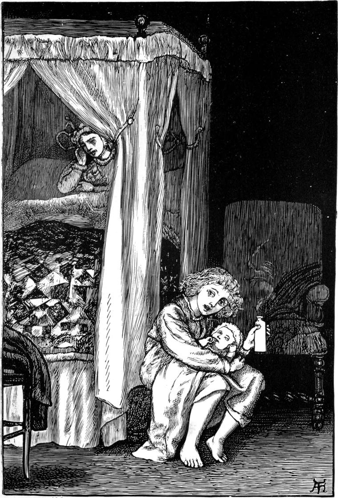

Willie's mother grew better, and Willie's sister grew bigger; and the strange nurse went away, and Willie and his mother and Tibby, with a little occasional assistance from the doctor, managed the baby amongst them. Considering that she had been yet only a short time at school, she behaved wonderfully well. She never cried except she was in some trouble, and even then you could seldom have seen a tear on her face. She did all that was required of her, grew longer and broader and heavier, and was very fond of a lighted candle. The only fault she had was that she wouldn't give Willie quite so many smiles as he wanted. As to the view she took of affairs, she seemed for a long time to be on the whole very well satisfied with life and its gifts. But when at last its troubles began to overtake her, she did not approve of them at all. The first thing she objected to was being weaned, which she evidently considered a very cruel and unnecessary experience. But her father said it must be, and her mother, believing him to know best, carried out his decree. Little Agnes endured it tolerably well in the daytime, but in the night protested lustily—was indeed so outrageously indignant, that one evening the following conversation took place at the tea-table, where Willie sat and heard it.
"Really, my dear," said Mrs Macmichael, "I cannot have your rest disturbed in this way another night. You must go to Willie's room, and let me manage the little squalling thing myself."
"Why shouldn't I take my share of the trouble?" objected her husband.
"Because you may be called up any moment, and have no more sleep till next night; and it is not fair that what sleep your work does let you have should be so unnecessarily broken. It's not as if I couldn't manage without you."
"But Willie's bed is not big enough for both of us," he objected.
"Then Willie can come and sleep with me."
"But Willie wants his sleep as much as I do mine."
Leas were crying in the room."
"Would I really?" thought Willie, feeling rather ashamed of himself.
"But who will get up and warm the milk-and-water for you?" pursued his father.
"Oh! I can manage that quite well."
"Couldn't I do that, mamma?" said Willie, very humbly, for he thought of what his mother had said about his sleeping powers.
"No, my pet," she answered; and he said no more.
"It seems to me," said his father, "a very clumsy necessity. I have been thinking over it. To keep a fire in all night only to warm such a tiny drop of water as she wants, I must say, seems like using a steam-engine to sweep up the crumbs. If you would just get a stone bottle, fill it with boiling water, wrap a piece of flannel about it, and lay it anywhere in the bed, it would be quite hot enough even in the morning to make the milk as warm as she ought to have it."
I will try it," she said.
Mr Macmichael consented; and straightway Willie was filled with silent delight at the thought of sleeping with his mother and the baby. Nor because of that only; for he resolved within himself that he would try to get a share in the business of the night: why should his mother have too little sleep rather than himself? They might at least divide the too little between them! So he went to bed early, full of the thought of waking up as soon as Agnes should begin to cry, and finding out what he could do. Already he had begun to be useful in the daytime, and had twice put her to sleep when both his mother and Tibby had failed. And although he quite understood that in all probability he would not have succeeded if they hadn't tried first, yet it had been some relief to them, and they had confessed it.
But when he woke, there lay his mother and his sister both sound asleep; the sun was shining through the blind; he heard Tibby about the house; and, in short, it was time to get up.
At breakfast, his father said to him—
"Well, Willie, how did Agnes behave herself last night?"
"So well!" answered Willie; "she never cried once."
"O Willie!" said his mother, laughing, "she screamed for a whole hour, and was so hungry after it that she emptied her bottle without stopping once. You were sound asleep all the time, and never stirred."
Willie was so much ashamed of himself, although he wasn't in the least to blame, that he could hardly keep from crying. He did not say another word, except when he was spoken to, all through breakfast, and his father and mother were puzzled to think what could be the matter with him: He went about the greater part of the morning moodily thinking; then for advice betook himself to Mrs Wilson, who gave him her full attention, and suggested several things, none of which, however, seemed to him likely to succeed.
"If I could but go to bed after mamma was asleep," he said, "I could tie a string to my hair, and then slip a loop at the other end over mamma's wrist, so that when she sat up to attend to Agnes, she would pull my hair and wake me. Wouldn't she wonder what it was when she felt it pulling her?"
He had to go home without any help from Mrs Wilson. All the way he kept thinking with himself something after this fashion—
"Mamma won't wake me, and Agnes can't; and the worst of it is that everybody else will be just as fast asleep as I shall be. Let me see—who is there that's awake all night? There's the cat: I think she is, but then she wouldn't know when to wake me, and even if I could teach her to wake me the moment Agnes cried, I don't think she would be a nice one to do it; for if I didn't come awake with a pat of her velvety pin-cushions, she might turn out the points of the pins in them, and scratch me awake. There's the clock; it's always awake; but it can't tell you the time till you go and ask it. I think it might be made to wind up a string that should pull me when the right time came; but I don't think I could teach it. And when it came to the pull, the pull might stop the clock, and what would papa say then? They tell me the owls are up all night, but they're no good, I'm certain. I don't see what I am to do. I wonder if God would wake me if I were to ask Him?"
I don't know whether Willie did or did not ask God to wake him. I did not inquire, for what goes on of that kind, it is better not to talk much about. What I do know is, that he fell asleep with his head and heart full of desire to wake and help his mother; and that, in the middle of the night, he did wake up suddenly, and there was little Agnes screaming with all her might. He sat up in bed instantly.
"What's the matter, Willie?" said his mother. "Lie down and go to sleep."
"Baby's crying," said Willie.
"Never you mind. I'll manage her."
I'll take her from you, and perhaps she will take her drink from me."
"Nonsense, Willie. Lie down, my pet."
"But I've been thinking about it, mamma. Do you remember, yesterday, Agnes would not take her bottle from you, and screamed and screamed; but when Tibby took her, she gave in and drank it all? Perhaps she would do the same with me."
As he spoke he slipped out of bed, and held out his arms to take the baby. The light was already coming in, just a little, through the blind, for it was summer. He heard a cow lowing in the fields at the back of the house, and he wondered whether her baby had woke her. The next moment he had little Agnes in his arms, for his mother thought he might as well try, seeing he was awake.
"Do take care and don't let her fall, Willie."
"That I will, mamma. I've got her tight. Now give me the bottle, please."
"I haven't got it ready yet; for you woke the minute she began to cry."
So Willie walked about the room with Agnes till his mother had got her bottle filled with nice warm milk-and-water and just a little sugar. When she gave it to him, he sat down with the baby on his knees, and, to his great delight, and the satisfaction of his mother as well, she stopped crying, and began to drink the milk-and-water.

"Why, you're a born nurse, Willie!" said his mother. But the moment the baby heard her mother's voice, she forsook the bottle, and began to scream, wanting to go to her.
"O mamma! you mustn't speak, please; for of course she likes you better than the bottle; and when you speak that reminds her of you. It was just the same with Tibby yesterday. Or if you must speak, speak with some other sound, and not in your own soft, sweet way."
A few moments after, Willie was so startled by a gruff voice in the room that he nearly dropped the bottle; but it was only his mother following his directions. The plan was quite successful, for the baby had not a suspicion that the voice was her mother's, paid no heed to it, and attended only to her bottle.
Mr Macmichael, who had been in the country, was creeping up the stair to his room, fearful of disturbing his wife, when what should he hear but a man's voice as he supposed! and what should he think but that robbers had broken in! Of course he went to his wife's room first. There he heard the voice plainly enough through the door, but when he opened it he could see no one except Willie feeding the baby on an ottoman at the foot of the bed. When his wife had explained what and why it was, they both laughed heartily over Willie's suggestion for leaving the imagination of little Agnes in repose; and henceforth he was installed as night-nurse, so long as the process of weaning should last; and very proud of his promotion he was. He slept as sound as ever, for he had no anxiety about waking; his mother always woke him the instant Agnes began to cry.
"Willie!" she would say, "Willie! here's your baby wanting you."
And up Willie would start, sometimes before he was able to open his eyes, for little boys' eyelids are occasionally obstinate. And once he jumped out of bed crying, "Where is she, mamma? I've lost her!" for he had been dreaming about her.
You may be sure his mamma let him have a long sleep in the morning always, to make up for being disturbed in the night.
Agnes throve well, notwithstanding the weaning. She soon got reconciled to the bottle, and then Willie slept in peace.